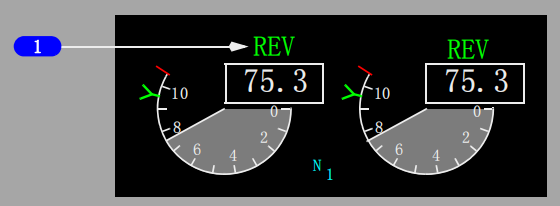

1 反推(REVERSER)指示灯
亮 (琥珀色) - 出现以下一种或几种情况：
• 隔离活门或反推控制活门不在指令位置
• 一个或多个反推套筒不在指令状态
• 自动重新收起电路已被激活
• 探测到同步轴锁定电路故障。
2 发动机控制 (ENGINE CONTROL )指示灯
亮 (琥珀色) -发动机控制系统出现不可放行的故障。
出现下列情况指示灯工作:
• 发动机正在工作,并且，
• 飞机在地面，并且:
• 起飞前低于80海里/小时，或
• 接地后大约30秒。
3 发动机电子控制(EEC)电门
开(ON)- 可见(白色)
• 表示选择了正常的控制方式
• EEC计算的发动机额定值是根据感应的大气情况和引气需求计算得出的。
• 当“ON”不可见时，EEC已被人工选择到备用方式。
备用(ALTN) - 可见(琥珀色)
• 指示的EEC已自动转换到备用控制方式，或已被人工选择到备用方式
• EEC提供额定推力或更高的推力。
Note: 如果EEC自动转换到软备用方式，“ON”和“ALTN”都可见。
Note: 在正常和备用控制方式下必须观察排气温度(EGT)限制。

反推(REV)指示
显示(琥珀色) - 反推离开收起位置。
显示(绿色) - 反推打开。
自动油门限制(A/T LIM)指示
亮(白色) - FMC不向自动油门（A/T）系统提供N1限制值。A/T使用相应的EEC所提供的降级的N1推力限制。
灯亮时，A/T LIT指示替换推力方式显示。
1 排气温度(EGT)红线
显示(红色)-
• 最大起飞EGT限制
• 起动限制红线未显示时的最大空中起动EGT限制。
2 排气温度(EGT)琥珀色带
显示(琥珀色) -色带的下限显示最大连续EGT限制。
3 排气温度(EGT)起动限制红线
显示(红色)-
• 显示直到发动机达到稳定慢车(大约59% N2)。
• 用于EEC决定的地面起动和部分空中起动。
4 排气温度(EGT)读数(数字式)
显示(白色)- 正常操作范围(℃)
显示(琥珀色)- 超过最大连续限制
• 起飞或复飞过程中颜色变化受抑制最长可达5分钟(正常操作)
• 起飞或复飞过程中颜色变化受抑制最长可达10分钟(当在最初的5分钟抑制时间内出现单发情况时)
显示(红色)- 超过最大起飞限制或起动限制
在地面，双发关车后，红色方框表示飞行中发生过超限
显示(白色-闪烁)- 在地面起动期间，EEC感应到可能导致热起动或失速的情况。目前的EEC软件版本可在地面起动过程中即将热起动或失速时自动切断燃油。
1 发动机失效(ENG FAIL)告警
显示(琥珀色)–
• 发动机操作低于可维持的慢车（低于50% N2）；并且
• 发动机起动手柄在慢车（IDLE）位。
告警持续，直到–
• 发动机恢复；或
• 起动手柄移至切断（CUTOFF）位；或
• 发动机灭火手柄拉起
介绍
飞机由两台CFM56-7发动机提供动力。这种发动机是双转子、轴流式涡轮风扇发动机。
N1转子包含一个风扇、一个低压压气机和一个低压涡轮。N2转子包含一个高压压气机和一个高压涡轮。
N1和N2转子在机械上是相互独立的。N2转子驱动发动机齿轮箱。由引气驱动的起动机马达与N2转子连接。
双通道电子发动机控制(EEC)调节每台发动机。
EEC监控自动油门和飞行机组输入信号，以自动设置发动机推力。
每台发动机有各自的驾驶舱控制装置。通过改变推力手柄位置来实现推力设置。
推力手柄由自动油门系统自动定位，或由飞行机组人员人工定位。
前推力手柄控制从慢车推力到最大推力的正向推力。
如果EEC在备用方式，仅在已采取了所有其它可行措施而飞机即将撞地的紧急情况下，才可考虑将推力手柄前推到底以提供过大推力。
反推手柄控制推力的范围从反推慢车到最大反推
发动机电子控制 (EEC)
每台发动机都有一个全权数字式EEC。
每个EEC有两个独立的控制通道，如果正在工作的通道失效，则通道自动转换。
在发动机起动或尝试起动时，EEC交替使用两个控制通道。EEC使用推力手柄的输入自动控制前推力和反推力。
EEC利用N1设定两种控制方式下的推力：正常和备用。可使用发动机面板上的EEC电门人工选择控制方式。
推力手柄的位置未达到前止挡位时，就可获得所装发动机的全额定起飞推力。
固定或假设温度起飞减推力额定值是在推力手柄的位置未达到全额定起飞推力时就设定的。
如果推力手柄向前推到前止动位，则可获得最大额定推力。EEC根据如下飞机型号限制最大推力：
Note: 根据飞机机型/序列号划分典型发动机额定推力。对于实际发动机额定推力，参考“性能签派”章。
• 737-700 - CFM56-7B24 额定值
• 737-800 - CFM56-7B27 额定值
EEC备用方式
EEC可以在软或硬两种备用方式下工作。
如果在正常方式下工作，没有获得所需的信号，EEC自动转换到软备用方式。出现这种情况时,备用(ALTN)电门亮，同时ON指示仍可见。
在软备用方式下, EEC利用最新有效的飞行状态确定发动机参数，这使得方式发生改变而不会使发动机推力立刻改变。
随着飞行条件的变化，可能会出现推力额定功率不足或过大的情况。把推力手柄拉倒慢车或用后顶板上的EEC电门人工选择ALTN可进入硬备用方式，在输入该方式前一直保留软备用方式。
Note: 任一电子显示组件(DEU)失效都将导致两部EEC信号丢失。EEC ALTN灯亮并且每个EEC返回到备用方式，以阻止发动机使用单一数据源信号工作。
进入硬备用方式时, EEC返回到备用方式推力计划。
推力手柄处于相同的位置时，硬备用方式推力总是等于或高于正常方式推力。
在软备用方式下，通过收推力手柄到慢车位进入硬备用方式，此种方式下ALTN电门保持亮且ON指示仍然可见。
人工选择ALTN时，ON指示消失。
结构限制保护
在正常和备用方式下，EEC提供N1和N2红线超速保护。由于EEC不提供EGT红线超限保护，必须由机组人工进行EGT限制观察。
慢车操作
EEC自动选择地面最小慢车、飞行最小慢车和进近慢车。地面操作时选择地面最小慢车，在大部分飞行阶段中选择飞行最小慢车。
在空中，如果襟翼在着陆形态或任一发动机防冰接通，则选择进近慢车。
在相同的空速和高度下，进近慢车的N1和N2% RPM(转/分)将高于飞行最小慢车的N1和N2% RPM。
较高的RPM可改善复飞时的发动机加速时间。
保持进近慢车，直至接地后选择了地面最小慢车。
在空中，如果故障阻碍EEC接收襟翼或防冰信号，则在15,000英尺MSL以下开始实施进近慢车计划。
非正常起动保护(仅地面起动)
在地面起动期间，EEC监控发动机参数以探测是否会出现热起动、发动机失速、EGT超限和湿起动。
空中起动时，这些保护特性不起作用。
如果出现EGT快速上升或EGT接近起动限制或压缩机失速，表明即将发生热起动，这时包围EGT数字读数的白框闪烁。
当起动手柄移至CUTOFF位或发动机达到慢车N2时，闪烁的白框复置。
对即将发生热起动或失速的发动机，当前的EEC版本(7.B.Q及之后的版本)将自动关断点火并切断燃油。
如果EGT超出起动限制, EGT显示框和刻度都变成红色。EEC自动关断点火并切断发动机的燃油供应。
当EGT降到起动限制以下时，警戒终止且显示恢复为白色。
双发关车后，EGT框变红色，以提醒机组注意发生过超温情况。
如果起动手柄移至慢车位后EGT不上升，表明发生湿起动。
若探测到湿起动，EEC关断点火并且在起动手柄移至慢车位15秒后切断发动机的燃油供给。
反推装置
每台发动机都装有一个液压操作的反推装置，包括左和右两个平移套筒。
反推套筒向后移动使折流门通过固定的叶栅将风扇气流向前偏转，从而产生反推力。
反推装置仅在地面操作时使用，用于接地后使飞机减速，以减少停止距离和刹车磨损。
操纵1号和2号发动机反推工作所需的液压压力分别来自于液压A和液压B系统。
如果液压A系统和/或B系统失效，可通过备用液压系统以备用方式操作受影响的反推装置。
使用备用系统时，受影响的反推装置以较慢的速率放出或收回，并可能会出现推力不对称的情况。
当任一无线电高度表探测到高度小于10英尺时，或者当空/地安全传感器处于地面方式时，反推可以展开。
在正推力手柄处于慢车位之前，反推力手柄的移动受到机械限制。
选择反推后，电动机械锁松开，隔离活门打开且反推控制活门移至放出位，从而由液压压力使反推开锁并打开反推系统。
反推手柄的移动一直受内锁机械限制，直到反推套筒接近展开位置。
当任一反推套筒离开收起位置，位于上部显示组件的琥珀色反推(REV)指示亮。
当反推移至展开位时，REV指示灯变绿且反推手柄可以被提拉至2号卡位。
此位置可为正常操作提供充足的反推力。
必要时，可将反推手柄拉起超过2号卡位，以提供最大反推力。
反推手柄向下移动经过1号卡位时(反推慢车推力)，指令反推收回。
推力手柄到达全放下位置，控制活门移向收回位，液压压力使反推套筒收起并锁定。
反推装置收回后，隔离活门关闭，电动机械锁啮合。
当反推装置被指令收起时，位于后顶板上的反推(REVERSER)指示灯亮，在隔离活门关闭10秒钟后灯灭。
任何时候只要反推(REVERSER)指示灯亮超过12秒，则表示发生故障且主警戒 (MASTER CAUTION)灯和发动机(ENG)系统信号牌灯亮。
Note: 在反推手柄移至收起位的过程中，在经过1号卡位时停顿可能导致主警戒( MASTER CAUTION)灯和发动机(ENG)系统指示灯亮。
大约18秒的停顿会使电子机械锁接通并防止推力反推套筒进一步前移。循环操作反推可清除故障并恢复正常操作。
反推套筒在收起位置时，电动机械锁和液压操纵的锁定作动筒抑制各反推套筒移动，直至再次放出反推装置。
此外，自动再收起电路会将实际的反推套筒位置和指令的反推位置加以比较。
在反推作动筒未完全收起或非指令性地前移至展开位置的情况下，自动再收起电路打开隔离活门并指令控制活门至收起位置，使得液压压力直接使反推套筒收起。
自动再收起电路一旦工作，隔离活门将保持打开并且控制活门保持在收起位置，直至反推被指令展开或已采取修正性维护措施。
WARNING: 在地面，在未采取适当预防措施的情况下使用反推将会对地面人员造成危害